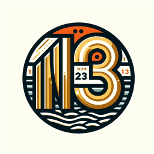

Nums123 (beta)
Choose language:
Cannot see language you are learning? Install its voice in your system.
Say 1-10
Say 1-20
Say 1-100
Say 1-1.000.000
Repeat
Stop speach
Reveal me the number
not yet ... press
Say 1-10
first
Teach me 1-10
Teach me 11-20
Teach me 10-100
Teach me more